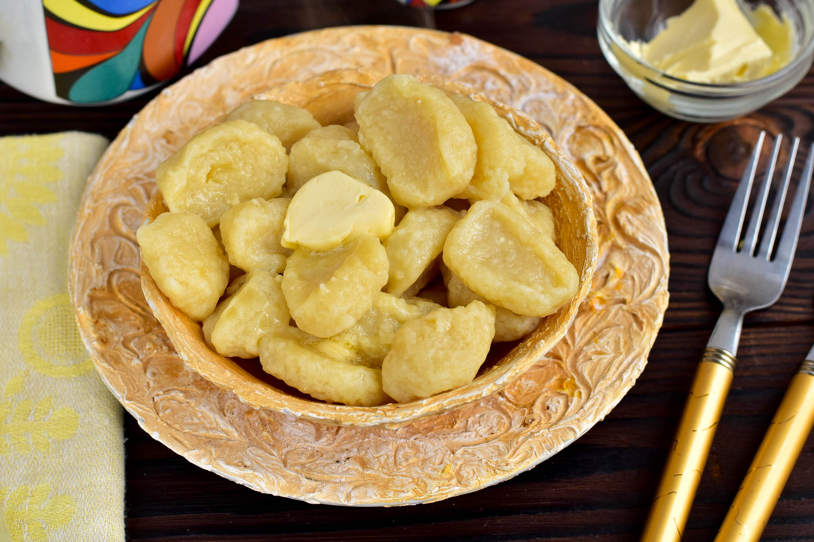

Galushka's

This simple dish has its own monument in Poltava
Ingridients
- cottage cheese 250g
- Egg 60g
- Wheat flour 50g
- Korn flour 100g
- Sour cream 50g
- Sugar to tasty
Recipe
-
Put in a deep bowl of cottage cheese, chicken egg,
wheat and corn flour, sour cream and sugar to taste.
-
Mix your dough carefully until smooth.
-
Form small round galushki from the test.
-
Carefully place galushki in boiling water.
-
Break the gallushki before the moment they do not pop up.
After cooking gallushki until ready for another 4-5 minutes.
-
Drain the water into colander
-
Spread dumplings on portions, add creamy oil and serve to the table.